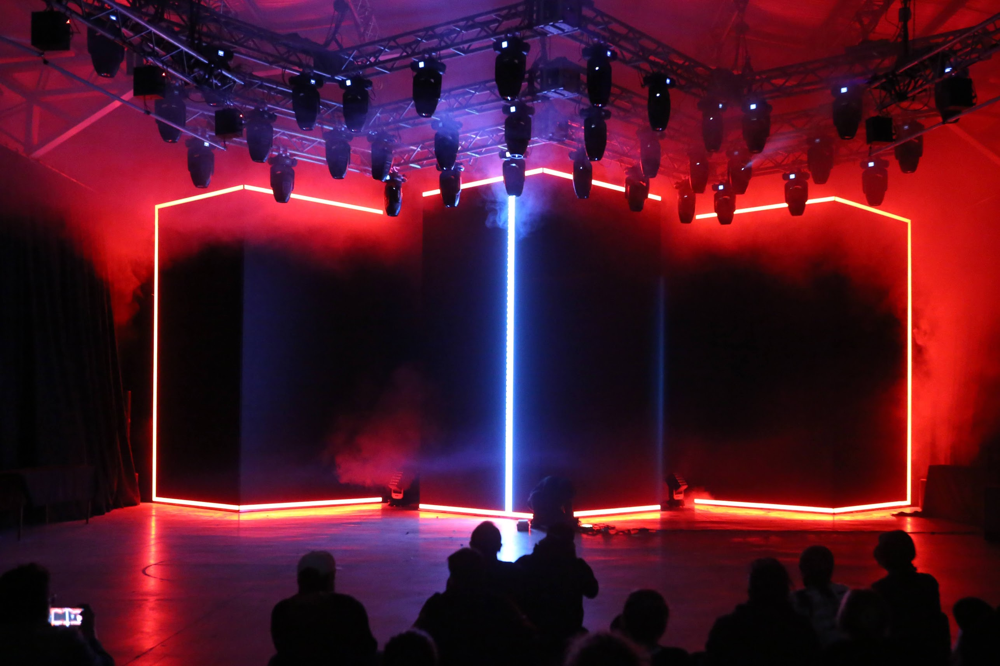
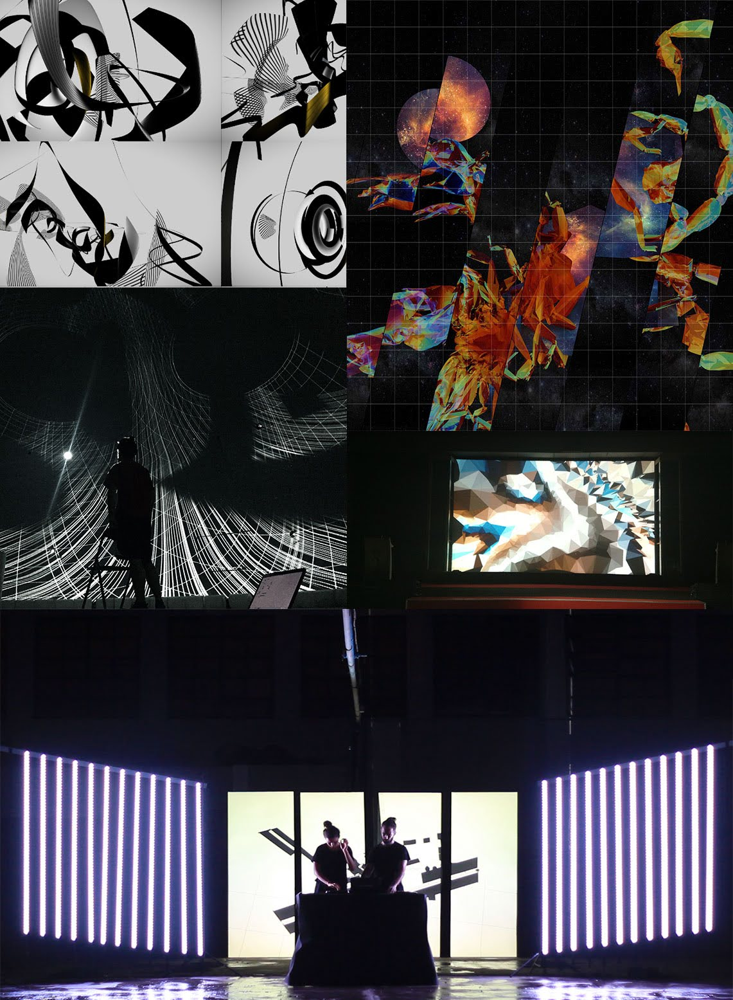
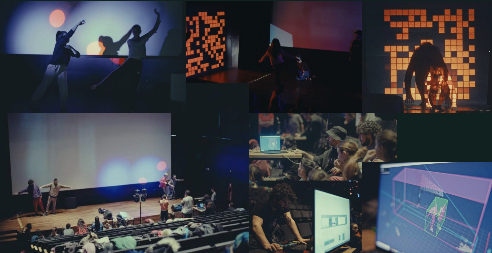
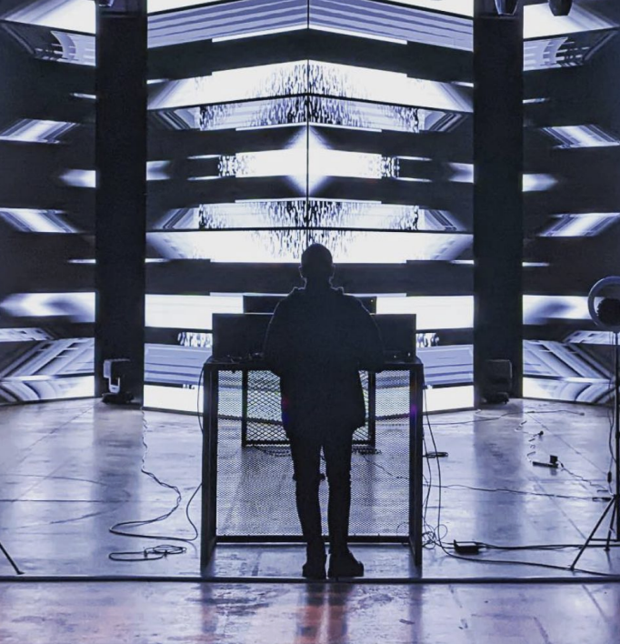
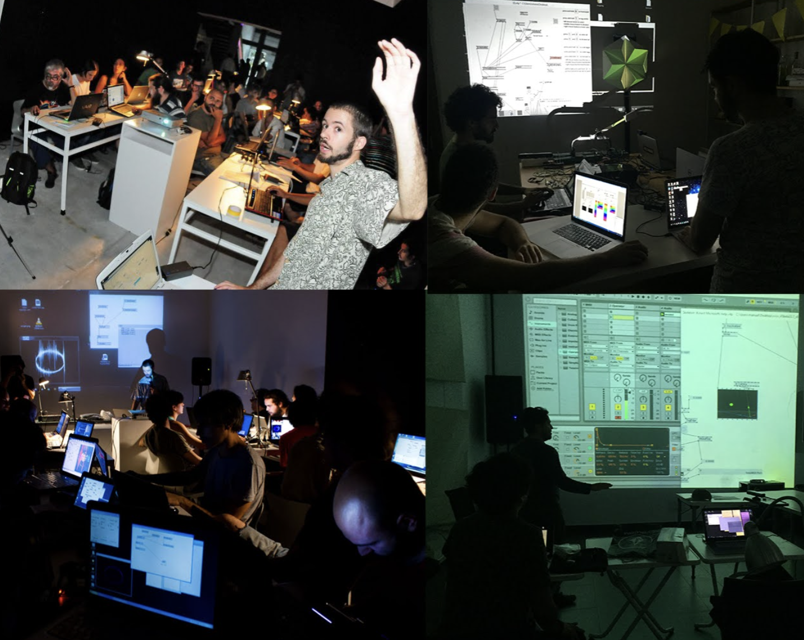
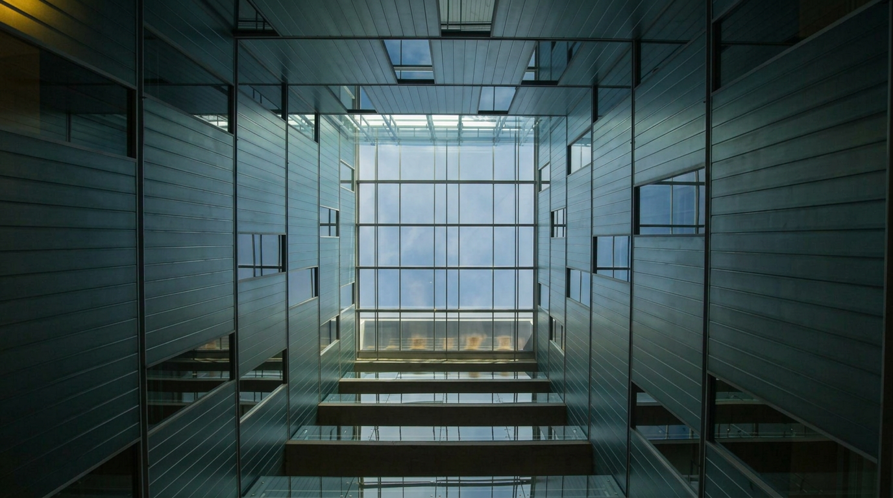
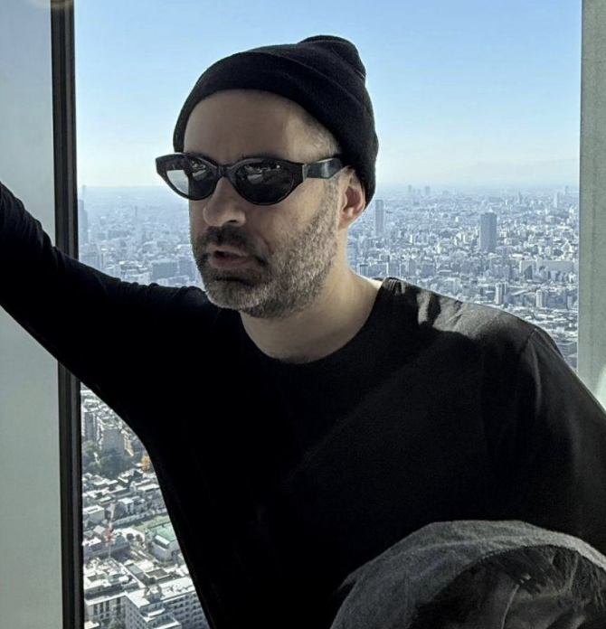
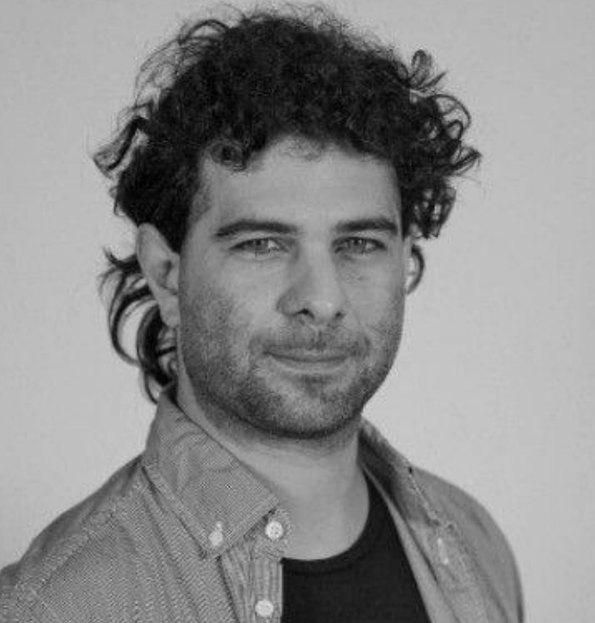
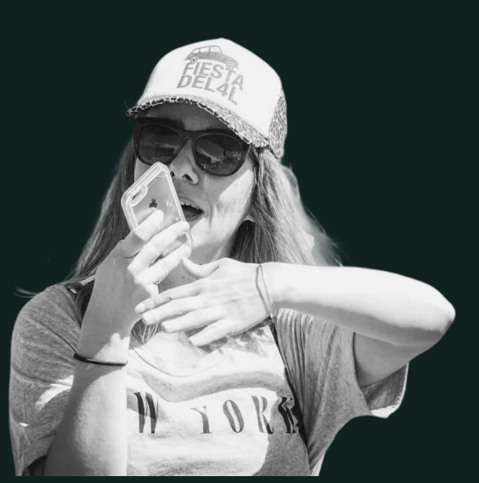
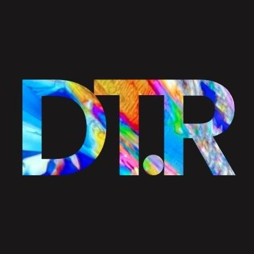

Un recorrido inmersivo que cruza masterclasses de tecnología, instalaciones de arte interactivo y performances audiovisuales en vivo.
2026
"La escena hierve. Falta el espacio que la contenga."
El escenario actual
Vivimos en un ecosistema de silos: el arte, la tecnología y la ciencia siguen atrapados en órbitas aisladas, desperdiciando el potencial explosivo de su colisión. Mientras la técnica avanza a ritmos vertiginosos, la producción artística se topa con un muro de cristal que restringe el acceso a las herramientas de vanguardia.
La escena local hierve; el talento y la urgencia creativa circulan en abundancia, pero faltan plataformas de hibridación y convergencia que rompan la inercia. Es hora de dinamitar las fronteras disciplinares y crear espacios de cruce real donde el código, la materia y la teoría se fundan sin jerarquías.
Crear un punto de encuentro real
para una escena que no acepta fronteras.
Ciclo DataRaíz
La tecnología deja de ser una herramienta aislada para experimentarse como un lenguaje expresivo, sensible y humano. DataRaíz construye un territorio donde la biología dialoga con el código, la danza con los sensores y el diseño visual con la electrónica.
Festival inmersivo de 12 horas que transforma el espacio en un ecosistema vibrante: workshops técnicos, cruce con industria creativa y un cierre A/V de vanguardia.
Conecta la demanda de la industria tecnológica con talento emergente disruptivo, proyectando una red profesional desde Buenos Aires hacia el mundo.
Convoca infraestructura de primer nivel y una dirección técnica-curatorial respaldada por trayectoria en plataformas como MUTEK y Node Forum Berlín.
Activa a una comunidad de creadores y desarrolladores que ya está definiendo el futuro del lenguaje digital contemporáneo.

La experiencia · Caja Negra
La Caja Negra es un dispositivo escénico heredado del teatro experimental: un espacio completamente oscuro, acústicamente controlado, donde se anulan todas las distracciones del entorno para que la experiencia sensorial sea absoluta.
En DataRaíz tomamos ese concepto y lo llevamos al cruce entre tecnología y arte: el negro total se convierte en la superficie donde las visuales generativas, la iluminación inmersiva y el sonido espacializado alcanzan su máxima potencia expresiva. La tecnología deja de ser un gadget para convertirse en un organismo vivo.
La configuración elimina la jerarquía entre escenario y público — todos están adentro de la obra.
El rito escénico como inmersión total, el contraste como lenguaje.
Un mismo espacio, múltiples capas
La jornada se organiza como un recorrido continuo bajo cuatro ejes: formación técnica intensiva, experimentación en procesos abiertos, conversatorios para intercambio de ideas y shows audiovisuales que atraviesan toda la experiencia.

El núcleo técnico en acción · formación, herramientas y práctica aplicada
Talleres hands-on donde los participantes acceden a hardware y software al que normalmente no llegarían. DataRaíz rompe la barrera económica del equipamiento y pone los fierros en manos de quienes los necesitan para crear.
Un espacio de producción en vivo y procesos abiertos. Ahí algo puede fallar, mutar o sorprender — y eso es exactamente lo que lo convierte en arte contemporáneo.
Charlas y conversatorios donde artistas, tecnólogos y científicos debaten futuros posibles y desafíos de la escena actual.
Shows audiovisuales en vivo como hilo conductor: una descarga de energía generativa que cohesiona toda la jornada.
Programación
Transferencia técnica en formato concentrado, con foco en práctica, herramientas y experimentación aplicada.
Procesos abiertos, demos y cruces de ideas para activar diálogo entre comunidad, industria y escena local.
Cierre sensorial con shows en vivo que consolidan el carácter inmersivo y colectivo del festival.
Lectura sintética del flujo de jornada: formación técnica, activación simultánea del hall y bloque final de performances.
Interfaz crítica
Pulso sensorial

Programación viva: la estructura del festival ya existe y el line-up se termina de afinar con aliados y confirmaciones.
Comunidad & audiencia

Comunidad activa · formación, intercambio y escena en movimiento
Artistas visuales, sonoros y escénicos junto a curadores del circuito de arte contemporáneo que definen la conversación cultural actual.
Directores, productores y profesionales que buscan nuevas fronteras en narrativa digital, innovación y experiencias inmersivas.
Estudiantes avanzados y docentes de artes electrónicas y diseño que usan la tecnología como herramienta democratizadora y expresiva.

La sede
DataRaíz requiere un ecosistema espacial y sonoro preciso. Elegimos ArtHaus porque su infraestructura acústica de primer nivel, su diseño arquitectónico y su posicionamiento en la escena cultural contemporánea lo convierten en el espacio ideal para albergar este formato.
Coproducción
Nuestra organización provee una inversión consolidada en curaduría transdisciplinaria, convocatoria de talento de primer nivel, desarrollo de red profesional hipersegmentada y producción ejecutiva. Ofrecemos este robusto ecosistema de contenidos en formato «llave en mano» para la programación anual de ArtHaus. A cambio, ArtHaus aporta su infraestructura física y técnica, capitalizando este evento como inversión equitativa en la coproducción.
Curaduría, convocatoria de talento de rango internacional, diseño pedagógico de talleres, producción ejecutiva y convocatoria orgánica de nichos altamente especializados de la industria digital y del software.
Conceptualizar, producir y ejecutar un festival de arte tecnológico desde cero representaría para ArtHaus una erogación formidable: curadores especializados, cachés en divisa extranjera, diseño pedagógico y el esfuerzo de convocar comunidades escurridizas. DataRaíz absorbe íntegramente esa inversión.
ArtHaus capitaliza el evento como parte de su programación anual sin erogación presupuestaria adicional. Su aporte en infraestructura física y técnica equivale a su porcentaje de inversión en la coproducción.
Valor institucional
DataRaíz atrae hacia Bartolomé Mitre 434 comunidades de creadores digitales, artistas audiovisuales, live-coders e investigadores — perfiles que amplían el alcance cultural de la fundación hacia territorios emergentes.
Asociar ArtHaus a un festival alineado con plataformas internacionales de artes electrónicas lo inserta en la conversación global del arte y la tecnología, con una curaduría independiente y de vanguardia.
ArtHaus recibe un ecosistema curatorial completo — dirección artística, convocatoria de talento de primer nivel y diseño pedagógico — sin asumir la complejidad de construirlo desde cero.
Un programa que expande la identidad cultural de ArtHaus sin comprometer su línea institucional.
Partículas · visual generativo en tiempo real
Dirección y equipo

Dirección general & creativaCreative Technologist y artista visual con +15 años de experiencia en experiencias audiovisuales inmersivas e instalaciones interactivas. Mantiene una carrera dual como innovador de alto nivel en la industria y performer prolífico. Actualmente es Senior Creative Technologist en Superside, liderando proyectos inmersivos para líderes tecnológicos globales como Meta, Microsoft, NVIDIA y Reddit.
Como artista y educador, desarrolló una extensa trayectoria internacional — performances, exhibiciones y workshops en Tokio, Hong Kong, Berlín, Barcelona, Bogotá y Ciudad de México. Dirigió sistemas de video técnico para shows de gran escala como Fuerza Bruta y desarrolló experiencias interactivas para Cirque du Soleil y el World Economic Forum.
Cofundador y coordinador de DATARAIZ.io. Su práctica actual se centra en la integración de IA generativa, WebXR y motores en tiempo real, empujando constantemente los límites de la interacción humana en entornos digitales y físicos.

Producción & estrategia tecnológicaIngeniero electrónico y tecnólogo creativo en la intersección de arte, ciencia y tecnología. +15 años desarrollando sistemas electrónicos, audiovisuales e interactivos en contextos artísticos, culturales y científicos.
Desde 2007 trabaja de forma independiente en el campo multimedia: instalaciones interactivas, entornos escénicos, interfaces experimentales y sistemas tecnológicos a medida para artistas, instituciones y eventos de gran escala. Su práctica se fundamenta en electrónica, sistemas embebidos, tecnologías de sonido y video e interacción en tiempo real.
Cofundador y coordinador de DATARAIZ.io. Actualmente trabaja en la industria biotecnológica liderando el desarrollo de sistemas tecnológicos innovadores — electrónica, automatización e ingeniería de sistemas — integrando investigación científica, diseño de ingeniería y colaboración interdisciplinaria.

Investigación & diseño de procesos culturalesInvestigadora senior en innovación en la Universidad Politécnica de Madrid y diseñadora de procesos culturales. Su práctica se fundamenta en una arquitectura de meta-diseño sistémico desarrollada en su tesis doctoral sobre creación de Living Labs. +15 años de experiencia.
Articula enfoques transdisciplinarios para la conceptualización, implementación colectiva y despliegue de intervenciones tecnológicas basadas en evidencia, entendiendo el arte y la creatividad como espacios de experimentación situada y producción de conocimiento.
A través del diseño de dispositivos y metodologías participativas, explora nociones como territorio, ecosistema y agencia, activando procesos que conectan cuerpos, territorios y tecnologías mediante una lógica relacional. Radicada en Europa desde 2016, actualmente es directora del LifeSpace Living Lab en la Universidad.

Manifiesto
Somos la interfaz crítica donde la tecnología de punta, la formación y el pulso de la pista se cruzan. DataRaíz es el ecosistema donde las marcas prueban su hardware en la vida real, los creadores expanden sus herramientas y el público vive la vanguardia electrónica desde adentro. Formá parte de la raíz.
Proyección & cierre
La primera edición está pensada como un dispositivo preciso y potente: experiencia cercana, dirección curatorial fuerte y foco en calidad de vínculo.
El festival nace con capacidad de expandirse en futuras ediciones sin perder identidad, método ni profundidad de experiencia.
Más que una fecha, DataRaíz se plantea como infraestructura cultural para sostener aprendizaje, experimentación y comunidad a largo plazo.
Buscamos aliados para co-crear la primera edición.